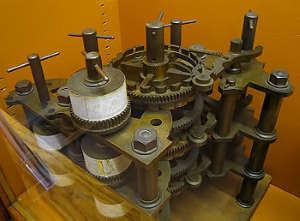
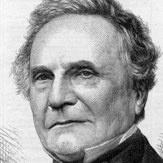

 Разностная машина Чарльза Бэббиджа — механический аппарат, изобретённый английским математиком Чарльзом Бэббиджем, предназначенный для автоматизации вычислений путём аппроксимации функций многочленами и вычисления конечных разностей. Возможность приближённого представления в многочленах логарифмов и тригонометрических функций позволяет рассматривать эту машину как довольно универсальный вычислительный прибор.
Ра́зностная маши́на Чарльза Бэббиджа — механический аппарат, изобретённый английским математиком Чарльзом Бэббиджем, предназначенный для автоматизации вычислений путём аппроксимации функций многочленами и вычисления конечных разностей. Возможность приближённого представления в многочленах логарифмов и тригонометрических функций позволяет рассматривать эту машину как довольно универсальный вычислительный прибор.
Идея разностной машины пришла в голову Иогану Мюллеру в 1788 году, но принято считать, что Бэббидж основывался в своем изобретении на работы Гаспара де Прони. В 1822 году он сконструировал первую модель разностной машины, на которой можно было показать принцип для создания большого настоящего механизма. Механизм разностной машины - десятичный, то есть для расчетов используются знакомые десять чисел от 0 до 9. Каждой шестеренке в механизме соответствовала своя цифра, разряд цифры определялся колесом, на котором она закреплена. Тем не менее, даже так разностная машину имеющая восемнадцать цифр и шесть разрядов состояла бы из 25 000 частей – половина для вычислений, другая для показа результатов. Если бы этот механизм был построен, он бы весил четыре тонны и имел бы два с половиной метра в высоту.
Изобретатель не представлял с какими трудностями он столкнется во время постройки своего устройства. И, как следствие этому: не помогли даже государственные субсидии (а это не мало – 17000 фунтов) – дело застопорилось. Тогда же, в 1834 году, Бэббидж задумал более амбициозную машину, позже названную аналитической, и она была уже самым настоящим компьютером - программируемым вычислительным механизмом. Несмотря на то, что машины так и не были построены Бэббиджем, их разработка и описание оценивается как одно из потрясающих интеллектуальных достижений 19- го века.
 Чарльз Бэббидж 26 декабря 1791, Лондон, Англия — 18 октября 1871, там же) — английский математик, изобретатель . Иностранный член-корреспондент Императорской академии наук в Санкт-Петербурге (1832). Написал труды по теории функций, механизации счёта в экономике. И также кроме Ра́зностной маши́н,сконструировал и построил (1820-22) машину для табулирования.